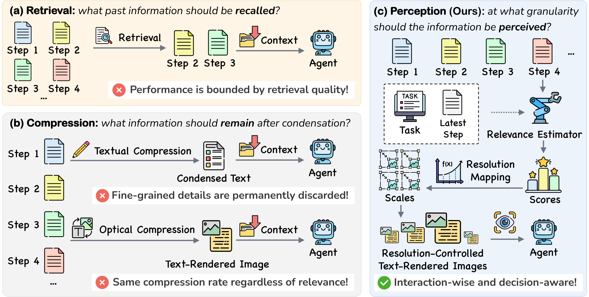
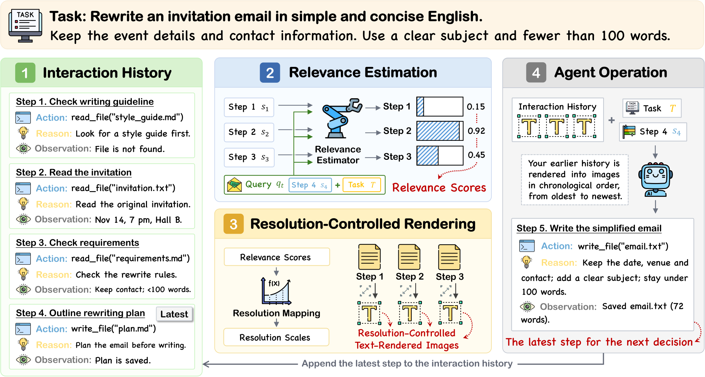
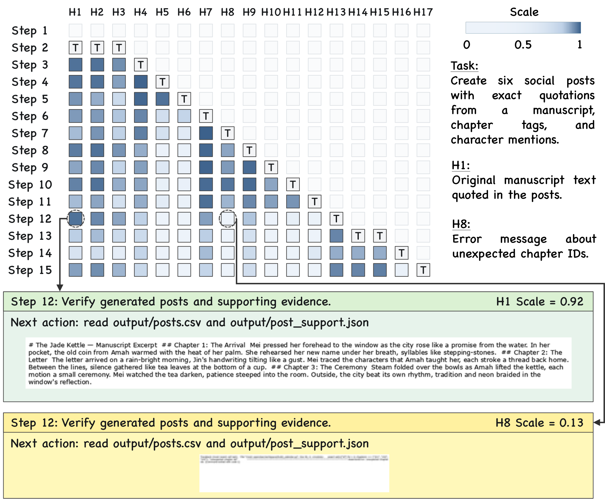
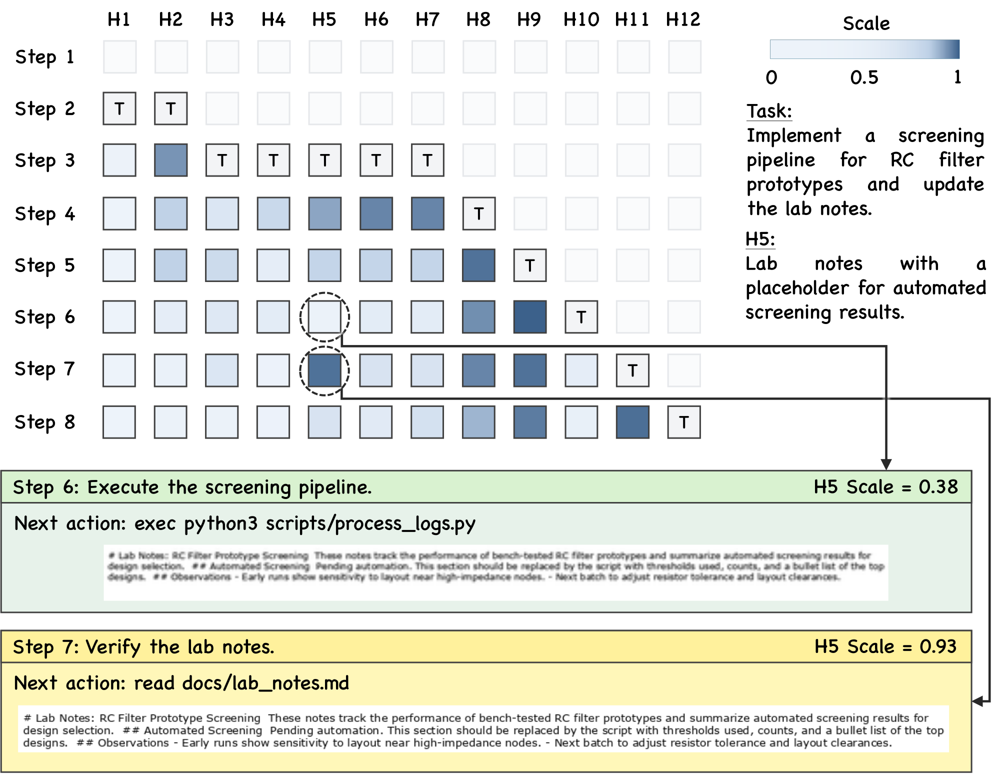

Perception as a dimension of agent memory
Every one knows what attention is. It is the taking possession by the mind, in clear and vivid form, of one out of what seem several simultaneously possible objects or trains of thought. … It implies withdrawal from some things in order to deal effectively with others.
William James, The Principles of Psychology, 1890
The granularity at which an agent perceives each past interaction should vary across interactions and evolve as the task progresses. Resolution as Attention renders each interaction as an image and scales its resolution according to its relevance to the upcoming decision.

Resolution as Attention

Relevance estimation
A 0.6B estimator, fine-tuned from Qwen3-Reranker, scores each past interaction against the query formed from the task and the latest interaction.
Resolution-controlled rendering
A learnable sigmoid maps each score to a scale. Each interaction is rendered once as a canonical image and resized to that scale before the agent perceives it.
Two-stage training
The estimator first learns from teacher relevance ratings, then is calibrated with reinforcement learning to keep the agent's decisions with fewer visual tokens. The agent stays frozen throughout.
Results
A layer on top of existing memory management
Resolution as Attention determines how memory is perceived, and therefore complements methods that determine what memory is retained. Adding it to summarization, retrieval and masking further cuts their token consumption by 22.5% to 54.1%, with no loss in score. Results with Qwen-3.8-27B.
What the agent sees
Case Study 1. The agent writes six social posts that quote a manuscript exactly. At Step 12 it checks the posts against their sources. The manuscript text it must quote stays sharp. A more recent error message about chapter IDs, less relevant to this check, shrinks to a few patches.

Case Study 2. The agent builds a screening pipeline for RC filter prototypes and then updates the lab notes. While it runs the pipeline, the lab notes fade to a coarse scale. Once it turns to verifying them, they come back into focus.

BibTeX
@article{xiang2026resolution,
title = {Resolution as Attention for Efficient Agent Memory Perception},
author = {Xiang, Siqi and Xu, Zhipeng and Liu, Shengrui and Chen, Zulong and Miao, Chunyan and Lu, Shijian},
journal = {arXiv preprint arXiv:2611.24422},
year = {2026},
url = {https://arxiv.org/abs/2611.24422}
}